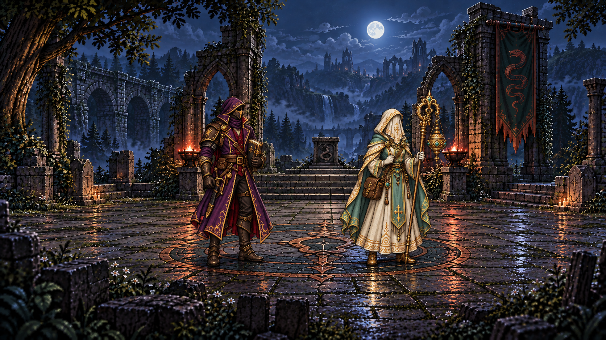
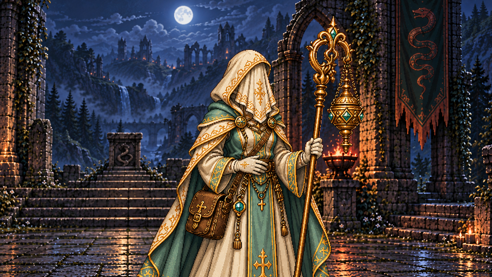

RPGThreeJS · Étude de mise en scène
Après la victoire Serpent
La compagnie reprend son souffle avant le bilan existant.


01 / 05
Après l’affrontement
La compagnie est déjà arrêtée dans les ruines nocturnes, matériel conservé.
Chargement des cinq illustrations…
Réduction des mouvements active. Vous pouvez parcourir les plans avec les flèches ; la lecture démarre uniquement sur demande.